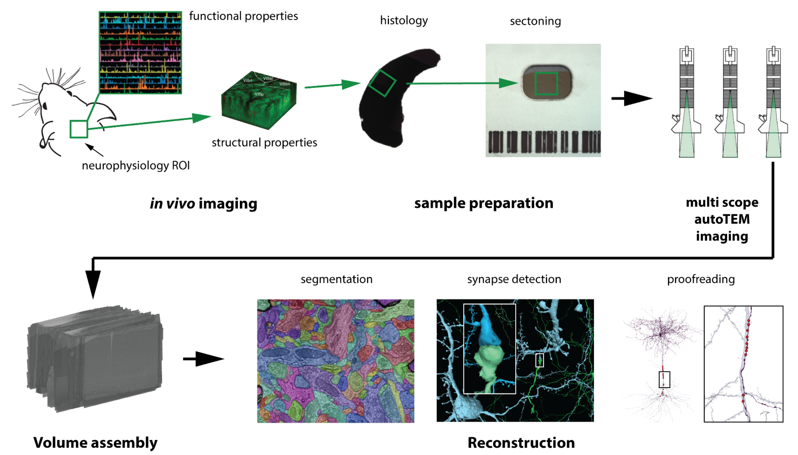
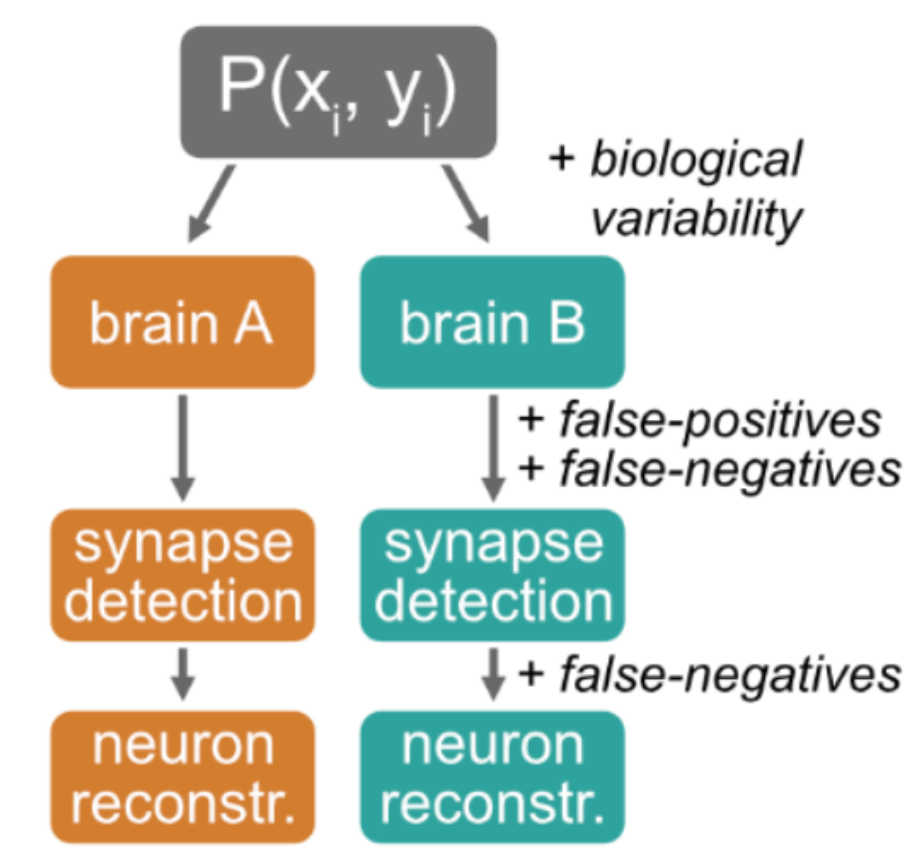

Quantifying proofreading effects on connectivity#
Ben Pedigo (he/him) Scientist I Allen Institute for Brain Science
Outline#
Background on proofreading in connectomics
Framework for quantifying proofreading effects
Examples
Example 1
Example 2
Example 3
Conclusions
Background#

Background#


Labor-intensive
Costly
Takes time
Proofreading edits#
We have a record of many edits now, across several datasets
>800K in Minnie, ~2.5 million in V1dd

How (and how much) do these edits matter for downstream conclusions?#
Why investigate the effect of proofreading?#
Learn how much proofreading is needed to answer a question
E.g. how much proofreading to identify connectivity type?
Understand what quantitative claims we can make given proofreading-induced variability
E.g. how to compare short-range vs. long-range connections?
Learn what future proofreading strategies could be most effective
